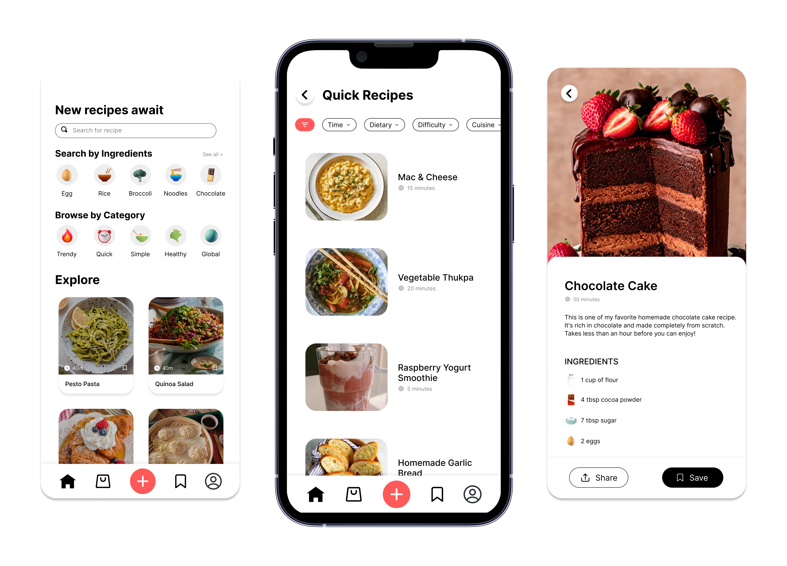
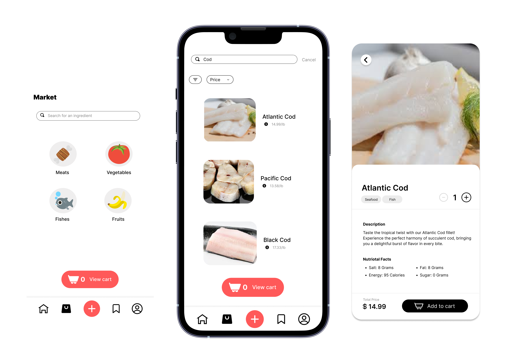

Tiny Chef
Tiny Chef is an app that reimagines how people connect through home cooking and recipe sharing. Working alongside a team, we built an app that empowers users to make the most of their available ingredients while fostering a community of home chefs.
UX Researcher
UX Designer
4 Designers
Figma
2 months
Overview
Tiny Chef is an app that reimagines how people connect through home cooking and recipe sharing. Working alongside a team, we built an app that empowers users to make the most of their available ingredients while fostering a community of home chefs.
Research shows that preparing meals at home can improve not just physical health, but mental and emotional health as well.
By preparing meals themselves, people can gain greater control over the ingredients they eat. Unfortunately, those who cook for themselves often encounter uncertainty when deciding what to prepare for their next meal. Furthermore, people may have ingredients available in their fridge but struggle to combine them into satisfying healthy dishes. This uncertainty can make it challenging to plan fulfilling meals, leading to dissatisfaction and unused ingredients

ACHIEVEMENTS
What we accomplished
-
Conducted paper prototyping and heuristic evaluations to better understand the user experience
-
Created user flows for main features on our app, including recipe search, dietary restrictions, recipe posting, and ingredient shopping
-
Created and iterated on designs based on user testing feedback we received
-
Looked for ways to improve our app's accessibility and usability through careful interface adjustments
-
Presented our findings and digital prototype
User Analysis
Our target audience
People who are looking for convenient ways to plan meals based on their current ingredients.
USER PERSONAS
Understanding our users
We came up with 4 users of our app and ideated background information for each of them. Creating these personas helped us think deeply about our audience and their needs. Each persona varied in age, occupation, and goals. This helped us understand the various groups who would use our platform.

-
Cooking beginner: One freshman who just started to live off-campus and wanted to try new recipes and follow a healthy eating schedule.
-
Changing diets: A 24-year-old adult who just graduated college and is starting a new diet as a vegan. They have found it challenging in the past to stay vegan, and want to discover new recipes that work with their diet.
-
Busy professional: Someone who works long hours and is too tired or pressed for time to plan out meals. This limited time means their need for quick and easy recipes is high.
-
Cooking enthusiasts: Someone with a passion for creating unique and tasty dishes and would like to share their recipes with others and receive feedback.
Task Analysis
During the Task Analysis phase of our project, we focused on determining the tasks of the problem we chose, analyzed their characteristics, and created abstract steps of each task.
TASK 1
Search for and Save a Recipe
Users can search and save recipes anytime, anywhere on their phones. While simple in concept, we had to consider challenges like search accuracy, slow loading times, and making the save feature intuitive. Our solution focused on making recipe discovery and saved collection simple to understand how to use.

TASK 2
Add Dietary Restriction
This is a setup task that users can easily update whenever their dietary needs change. The key challenge was balancing thoroughness with simplicity - we needed to cover all common restrictions while keeping the process of adding restrictions easy to understand.

TASK 3
Post a Recipe
Sharing recipes needed to be straightforward yet thorough enough to capture all recipe details. We focused on making the posting process feel simple, with clear steps for adding the ingredients, instructions, and photos. This also made us think about how auto-saving drafts could be a helpful feature to incorporate to prevent people from feeling stressed about losing their work.

Buy Ingredients from Market
The shopping feature in our app connects users directly with local suppliers for missing ingredients. We had to carefully consider the process of ordering and creating a smooth checkout experience.

Paper Prototypes
From our paper prototyping sessions, we received important feedback about how people naturally interact with each feature on our app. We had some people complete certain tasks using our paper prototypes. This low-fidelity testing helped us identify and address usability issues that people may run into early in the design process.
FLOW 1
Search and Save Recipe Flow
Testing revealed that users preferred using the search bar over category browsing when looking for specific recipes. We also discovered a need for clearer search button placement and to create a separate screen for the collection of saved recipes, overall teaching us to better predict various user behaviors.

FLOW 2
Add Dietary Restriction Flow
Users found the term 'flag' confusing in our edit profile page when adding dietary restrictions interface. We simplified the language to "Select dietary restrictions" and made buttons larger for better visibility. Based on feedback, we also added a 'My Restrictions' section to help users easily track their saved preferences.

FLOW 3
Post a Recipe Flow
Our testing showed users struggled to locate where to create posts from the home page. We ideated ways to add the text "Posts" to the profile page and replaced ambiguous terms like 'Subject' with 'Title'. These changes were important to avoid confusing our users.

FLOW 4
Buy Ingredients Flow
We learned that users found the "plus" button confusing when trying to add items to their cart. In response to this, we decided to embedd the "add to cart" button directly within item description pages and simplified the market search interface by removing the unnecessary sorting filters.

Medium-Fidelity Wireframes
We conducted a heuristic evaluation to assess our medium-fidelity prototypes, which helped us identify and prioritize issues based on severity. It was also just helpful to hear people's suggestions, challenges, and ideas, which gave us valuable feedback for improving our designs.
FLOW 1
Search and Save Recipe Flow
On the home page and other pages, we received feedback during the heuristic evaluation about the icons not changing based on what page you're on, relating to the feedback heuristic. We changed the icons to show a clearer indication of which page the user is currently on.

FLOW 2
Add Dietary Restriction Flow
For the edit profile page, when asked to add dietary restrictions, users pointed out that sifting through all the ingredients may be tedious. We added a search bar while maintaining the clickable ingredients list to support both search and recognition. We also increased button sizes to prevent misclicks, addressing the error prevention heuristic.

FLOW 3
Post a Recipe Flow
Major feedback centered on how difficult it was to find the "add post" feature within the user profile. We fixed this by adding the button to the main navigation bar. Since this is typically what other apps do, it would be easier for the user to recognize and navigate the button (recognition over recall heuristic). We also received suggestions about separating the content editing into sections; such as ingredients, cooking steps, and time. We learned this separation can make the editing process much easier for users.

FLOW 4
Buy Ingredients Flow
To address feedback we received about it being confusing to know if an item is added to the cart, we displayed an "Added to Cart" message when an item is successfully added to their cart.

Final Prototype
Recipes (Home)
The recipe discovery page serves as the homepage, where users can browse for recipes based on categories, search by ingredients, or look for a recipe using the search bar. Each recipe card has a picture, name, and time that represents how long it takes to cook it. When clicking on the recipe, it provides more details including a description, ingredients, and steps. Users can share the recipe or save it, which adds it to their collection.

Profile
The profile page serves as the user's personal representation on the platform. This is where the user can control their information, add any dietary restrictions, manage their account, and create posts by uploading recipes. We added a red plus button in the middle of the navigation bar, similar to many social media platforms to navigate users to the add post page. As users create a post, there is a progress bar at the top indicating the user's current status. Users also have the option to save their post as a draft if they want to finish adding details to their recipe later.

Market
The market section of our app allows users to buy ingredients they may need for recipes in a simple way. Users can look for ingredients by selecting a category or using the search bar. There is an indicator at the bottom letting the user know how many items are in their cart. Each item available for sale has its own cateogory tag(s), the ability to select a quantity, desription, nutritional details, and the price. We added the category tags, so that if a user has a dietary restriction listed on their account, they won't be shown the products they cannot consume.

Prototype Walk-Through
Takeaways
If we had more time, we would work on this next:
-
Conduct qualitative and quantitative research on our current design
-
Create login and signup pages, and develop an interactive onboarding process that guides users through main features
-
Offer the app in multiple languages and include a wide variety of international cuisines to cater to a global audience
-
Work on our branding (logo, color palette, typography, etc.) and create a stronger brand identity

REFLECTING
Final Thoughts
Through this project, I had the opportunity to practice user testing, such as paper prototyping and heuristic evaluation. Those experiences taught me the importance of making iterations when creating an app, since it led to significant design improvements, from realizing we should implement a search bar for dietary restrictions to adding the add post feature to the navigation bar. We also learned the importance of thinking about clearer navigation, error prevention, and accessible design. Collaborating with people from different academic backgrounds gave me new perspectives and pushed me to think creatively, and I learned more about how to use research and data to make design decisions.
wanna see my other projects? explore all projects →